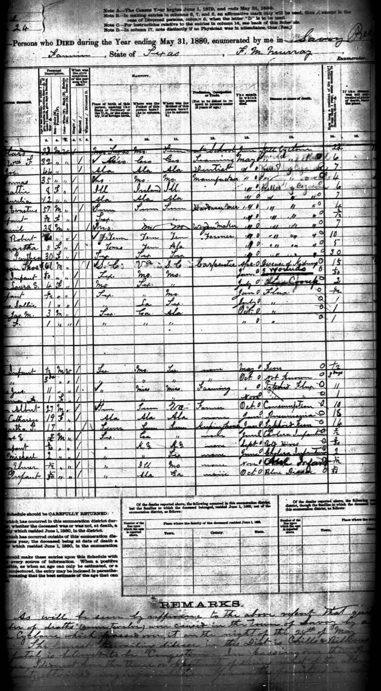
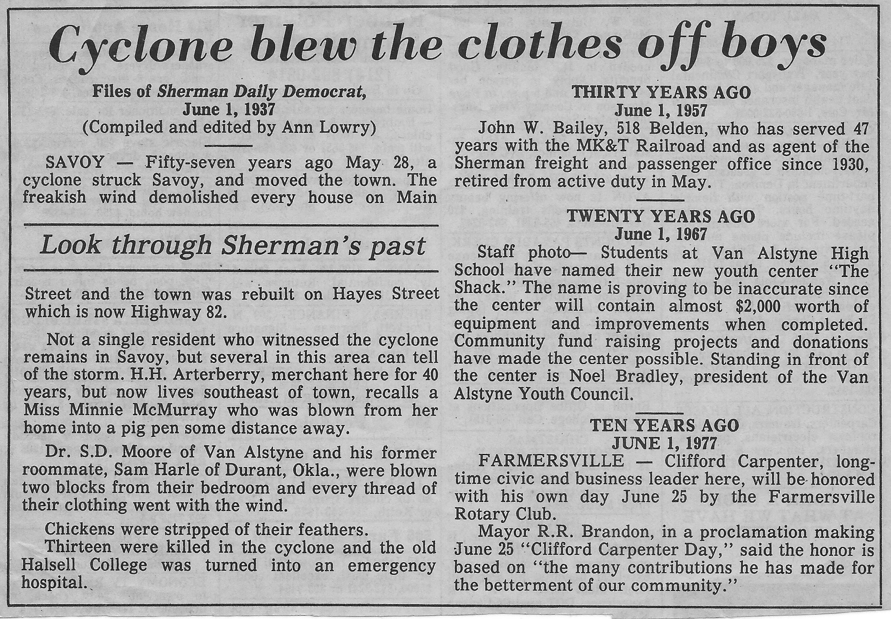

Her name appears in the victim lists as Rilla Kerns. She was a child. The archive does not give her age, but the newspaper accounts — filed from Savoy by correspondents who had come in on the overnight trains from Bonham and Sherman — call her a little girl, and the details of what happened to her make it clear she was small.
The cyclone threw her forty or fifty yards from wherever she had been when it hit. That is a long way to be thrown. It means she was in the air, carried by the funnel or by the winds on its outer edge, deposited somewhere in the debris field at a distance from the house or building where the night had found her. In the dark, in the rain that followed the cyclone almost immediately, she was not visible.
She was not found until daylight.

Someone found her at first light — a searcher working through the debris field, or perhaps simply someone who had been out looking, who found what the darkness had hidden. They carried her to the seminary building, which by then had become the town's improvised hospital, its floors covered with makeshift beds of salvaged bedding, its doors guarded against the curious. They put her down among the other injured.
She died the next morning.
Her name is on the list of the dead: Dr. Joseph Kearns, William Sudduth, E.L. Andrews and a child, Sam Gill, Ellie Gallagher, T.J. Cox, Mattie Best, Pantha Johnson, and Rilla Kerns. Nine people, or ten — the sources sometimes give different counts, depending on whether the child listed with E.L. Andrews is counted separately. In any case, Rilla Kerns is among them, found in the rubble at dawn, carried to the seminary, dead before the day was over.
The little girl Rilla Kerns was thrown forty or fifty yards clear of the wreckage and not found until daylight. She was carried to the seminary and died the next morning. — North Texas Express, May 1880
The archive holds the list of victims in a handwritten document — the kind of record that gets made in the immediate aftermath of a disaster, before anyone has decided how to make it official. The handwriting is careful, the names spelled with a particularity that suggests the person writing them down knew, or was trying to know, exactly who these people were. Rilla Kerns. A child's name, written in ink, on a list that still exists a hundred and forty years later.
The town was rebuilt. The seminary that sheltered her in her last hours was eventually demolished when it was no longer needed. The storm is remembered. Rilla Kerns is also remembered, at least here, in this telling of what happened in Savoy on the night of May 28, 1880.
All Tales